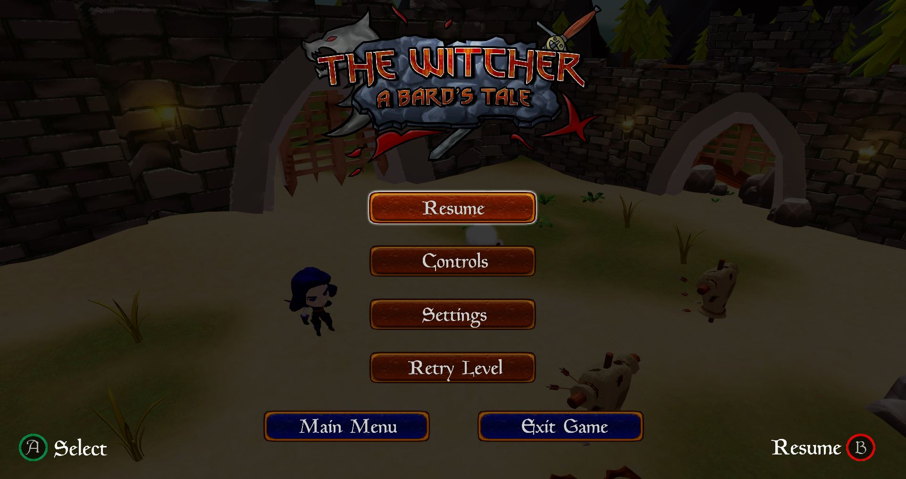
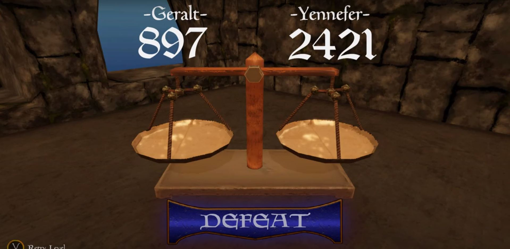
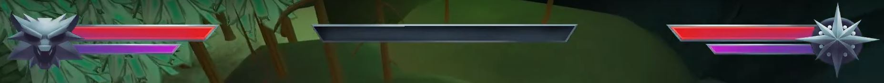
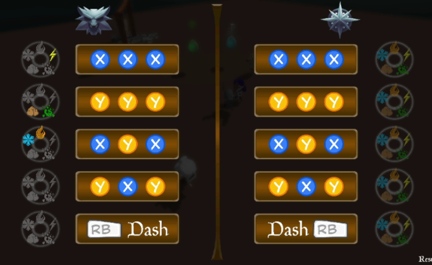

What did I do?
Main menu
Since the beginning of the project we wanted to have a not boring UI in our game, and that meant a non static UI. On top of that,
we decided to have something dynamic in the main menu, we decided to make the menu with a 3D scene and not with 2D art. We added humor too,
making Gerald have a hot bath in front of all of us. When it comes to buttons we took the decision of giving a special importance to us, since
this is a project to have a working background we put two buttons to promote ourselves, these are the "credits" button which brings you our credits scene and the Team button, which brings you to our GitHub repository.
Pause Menu
For every in-game menu, we decided that it was important to make players feel like they are in the middle of a game even though it was
paused. The fact that they know in every moment in what point they left the game when they paused was a must for me as a designer. In order
to achieve this, we decided to let the current game frame be the background of the screen when the game was paused. When it comes to buttons,
we thought that it was interesting to leave the "Main menu" and the "Exit Game" buttons on the bottom of the screen, giving them less importance
than others have in order to keep the players in the game.

Score screen
One of the problems that we found during the development of the project was that we found the score screen too boring, we had really static information and it did not give any positive nor negative feedback to the players. In order to fix this, we thought about making it simple when it comes to information, but turning it into a more dynamic and fun screen which added competitive feeling between the players.

Other menus
Besides the three screens previously described I also designed these three: controls screen, settings screen and credits screen.
HUD
The objective we sought to achieve during all the project when it comes to HUD was making it look a part of the game and to give the correct information to the players and make it in the correct way. At the same time it has been a challenge finding the way to make it have a lot of importance, but at the same time not bothering the players while they are playing.


UI ART
I also worked as a 2D artist helping the art team to produce assets for the UI, to make it I always used Photoshop.
List of assets produced:
Multiple Yennefer HUD iterations
Multiple Gerald HUD iterations
Multiple ultimate bar HUD iterations
Settings panel
Multiple game logo iterations
Leaderboards
UI AUDIO
I contributed as well in searching and giving advice for all the UI sounds.


{kind=link}
{kind=link}
{kind=link}
{kind=link}
{kind=link}